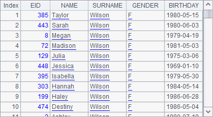
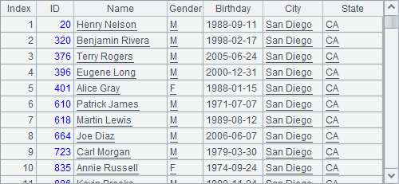
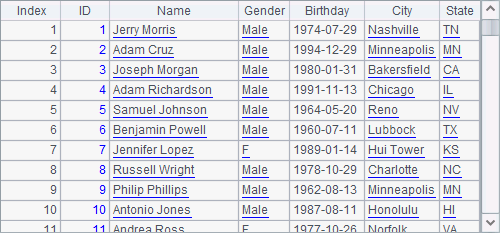

9.5.2 Returning results as needed
The user-defined functions may or may not return results. For example:
public static void distance3(Number loc1, Number loc2) {
double len = Math.abs(loc1.doubleValue()-loc2.doubleValue());
len = Math.round(len*1000)/1000d;
System.out.println(Double.toString(len));
}
When the computation with static method distance3 is completed, the result will only be printed out to the system console but won¡¯t be returned. Such methods are similar to the executable cells in a cellset, and > can be used when they are invoked. For example:
|
|
A |
|
1 |
>invoke(test.Calc01.distance3,-12.3,15) |
Now the output data can be viewed in the console. To access the console, click Tool>Options on the menu bar, and check Console takeover on the General page. The result is as follows:

If a user-defined function uses parameters or returns result, it should use data types supported by esProc; otherwise, errors may occur during presentation or invocation. Following lists the commonly-used data types in esProc and their counterparts in Java:
|
Integer |
java.lang.Integer |
|
Long integer |
java.lang.Long |
|
Floating point number |
java.lang.Double |
|
Big decimal |
java.math.BigInteger |
|
Real number |
java.lang.Number |
|
Boolean |
java.lang.Boolean |
|
String |
java.lang.String |
|
Date |
java.sql.Date |
|
Time |
java.sql.Time |
|
Datetime |
java.sql.TimeStamp |
|
Sequence |
com.raqsoft.dm.Sequence |
|
Table sequence |
com.raqsoft.dm.Table |
|
Binary data |
byte[] |
In the previous examples, all the returned results are of Double object, which corresponds to the floating point number in esProc; all parameters are Number data type, which corresponds to Real number in esProc. User-defined function can return results of different data types as needed. For instance, add another two user-defined functions to test.Calc01 to return results of different data types:
public static String distance4(Number loc1, Number loc2) {
double len = Math.abs(loc1.doubleValue()-loc2.doubleValue());
len = Math.round(len*1000)/1000d;
return Double.toString(len);
}
public static Sequence distance5(Number loc1, Number loc2) {
double len = Math.abs(loc1.doubleValue()-loc2.doubleValue());
len = Math.round(len*1000)/1000d;
com.raqsoft.dm.Sequence result = new com.raqsoft.dm.Sequence();
result.add(loc1);
result.add(loc2);
result.add(Double.valueOf(len));
return result;
}
These two static methods are also used to compute the distance between two points in a numerical axis. distance4 returns a result of string type and distance5 returns a result in a form of a sequence storing the coordinates of the two points and the distance between them. The invoke function is still used to invoke the two methods in a cellset:
|
|
A |
|
1 |
=invoke(test.Calc01.distance2,-12.3,15) |
|
2 |
=invoke(test.Calc01.distance4,-12.3,15) |
|
3 |
=invoke(test.Calc01.distance5,-12.3,15) |
For the convenience of comparison, A1 calls distance2 used in the previous example. After the code is executed, results of A1~A3 are as follows:
  
Notice that the results of A1 and A2 are of different data types and are thus displayed differently. The return results of user-defined functions can be used for later computation.